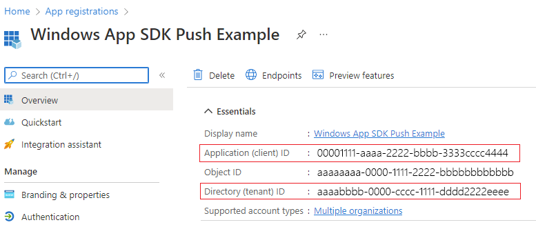
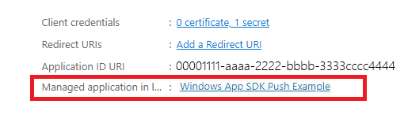
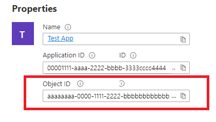
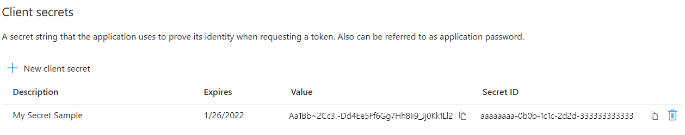

Quickstart: Push notifications in the Windows App SDK
In this quickstart you will create a desktop Windows application that sends and receives push notifications using the Windows App SDK.
Prerequisites
- Start developing Windows apps
- Either Create a new project that uses the Windows App SDK OR Use the Windows App SDK in an existing project
- An Azure Account is required in order to use Windows App SDK push notifications.
- Read Push notifications overview
Sample app
This quickstart walks through adding push notifications support to your app. See the example code from this quickstart in context in the sample apps found on GitHub.
API reference
For API reference documentation for push notifications, see Microsoft.Windows.PushNotifications Namespace.
Configure your app's identity in Azure Active Directory (AAD)
Push notifications in Windows App SDK use identities from Azure Active Directory (AAD). Azure credentials are required when requesting a WNS Channel URI and when requesting access tokens in order to send push notifications. Note: We do NOT support using Windows App SDK push notifications with Microsoft Partner Center.
Step 1: Create an AAD app registration
Login to your Azure account and create a new AAD App Registration resource. Select New registration.
Step 2: Provide a name and select a multi-tenant option
Provide an app name.
Push notifications require the multi-tenant option, so select that.
- For more information about tenants, see Who can sign in to your app?.
Select Register
Take note of your Application (client) ID, as this is your Azure AppId that you will be using during activation registration and access token request.
Take note of your Directory (tenant) ID, as this is your Azure TenantId that you will be using when requesting an access token.
Important

Take note of your Application (client) ID and Directory (tenant) ID.Take note of your Object ID, as this is your Azure ObjectId that you will be using when requesting a channel request. Note that this is NOT the object ID listed on the Essentials page. Instead, to find the correct Object ID, click on the app name in the Managed application in local directory field on the Essentials page:


Note
A service principal is required to get an Object ID, if there is not one associated with your app, follow the steps in one of the following articles to create one in the Azure portal or using the command line:
Use the portal to create an Azure AD application and service principal that can access resources
Use Azure PowerShell to create a service principal with a certificate
Step 3: Create a secret for your app registration
Your secret will be used along with your Azure AppId/ClientId when requesting an access token to send push notifications.

Navigate to Certificates & secrets and select New client secret.
Important
Ensure you copy your secret once created and store it in a safe location, like Azure Key Vault. It will only be viewable once right after creation.
Step 4: Map your app's Package Family Name to its Azure AppId
If your app is packaged (including packaged with an external location), you can use this flow to map your app's Package Family Name (PFN) and its Azure AppId.
If your app is a packaged Win32 app, then create a Package Family Name (PFN) mapping request by emailing Win_App_SDK_Push@microsoft.com with subject line "Windows App SDK Push Notifications Mapping Request" and body "PFN: [your PFN]", AppId: [your APPId], ObjectId: [your ObjectId]. Mapping requests are completed on a weekly basis. You will be notified once your mapping request has been completed.
Configure your app to receive push notifications
Step 1: Add namespace declarations
Add the namespace for Windows App SDK push notifications Microsoft.Windows.PushNotifications.
#include <winrt/Microsoft.Windows.PushNotifications.h>
using namespace winrt::Microsoft::Windows::PushNotifications;
Step 2: Add your COM activator to your app's manifest
Important
If your app is unpackaged (that is, it lacks package identity at runtime), then skip to Step 3: Register for and respond to push notifications on app startup.
If your app is packaged (including packaged with external location):
Open your Package.appxmanifest. Add the following inside the <Application> element. Replace the Id, Executable, and DisplayName values with those specific to your app.
<!--Packaged apps only-->
<!--package.appxmanifest-->
<Package
...
xmlns:com="http://schemas.microsoft.com/appx/manifest/com/windows10"
...
<Applications>
<Application>
...
<Extensions>
<!--Register COM activator-->
<com:Extension Category="windows.comServer">
<com:ComServer>
<com:ExeServer Executable="SampleApp\SampleApp.exe" DisplayName="SampleApp" Arguments="----WindowsAppRuntimePushServer:">
<com:Class Id="[Your app's Azure AppId]" DisplayName="Windows App SDK Push" />
</com:ExeServer>
</com:ComServer>
</com:Extension>
</Extensions>
</Application>
</Applications>
</Package>
Step 3: Register for and respond to push notifications on app startup
Update your app's main() method to add the following:
- Register your app to receive push notifications by calling PushNotificationManager::Default().Register().
- Check the source of the activation request by calling AppInstance::GetCurrent().GetActivatedEventArgs(). If the activation was triggered from a push notification, respond based on the notification's payload.
Important
You must call PushNotificationManager::Default().Register before calling AppInstance.GetCurrent.GetActivatedEventArgs.
The following sample is from the sample packaged app found on GitHub.
// cpp-console.cpp
#include "pch.h"
#include <iostream>
#include <winrt/Microsoft.Windows.PushNotifications.h>
#include <winrt/Microsoft.Windows.AppLifecycle.h>
#include <winrt/Windows.Foundation.h>
#include <wil/result.h>
#include <wil/cppwinrt.h>
using namespace winrt;
using namespace Windows::Foundation;
using namespace winrt::Microsoft::Windows::PushNotifications;
using namespace winrt::Microsoft::Windows::AppLifecycle;
winrt::guid remoteId{ "7edfab6c-25ae-4678-b406-d1848f97919a" }; // Replace this with your own Azure ObjectId
void SubscribeForegroundEventHandler()
{
winrt::event_token token{ PushNotificationManager::Default().PushReceived([](auto const&, PushNotificationReceivedEventArgs const& args)
{
auto payload{ args.Payload() };
std::string payloadString(payload.begin(), payload.end());
std::cout << "\nPush notification content received in the FOREGROUND: " << payloadString << std::endl;
}) };
}
int main()
{
// Setup an event handler, so we can receive notifications in the foreground while the app is running.
SubscribeForegroundEventHandler();
PushNotificationManager::Default().Register();
auto args{ AppInstance::GetCurrent().GetActivatedEventArgs() };
switch (args.Kind())
{
// When it is launched normally (by the users, or from the debugger), the sample requests a WNS Channel URI and
// displays it, then waits for notifications. This user can take a copy of the WNS Channel URI and use it to send
// notifications to the sample
case ExtendedActivationKind::Launch:
{
// Checks to see if push notifications are supported. Certain self-contained apps may not support push notifications by design
if (PushNotificationManager::IsSupported())
{
// Request a WNS Channel URI which can be passed off to an external app to send notifications to.
// The WNS Channel URI uniquely identifies this app for this user and device.
PushNotificationChannel channel{ RequestChannel() };
if (!channel)
{
std::cout << "\nThere was an error obtaining the WNS Channel URI" << std::endl;
if (remoteId == winrt::guid { "00000000-0000-0000-0000-000000000000" })
{
std::cout << "\nThe ObjectID has not been set. Refer to the readme file accompanying this sample\nfor the instructions on how to obtain and setup an ObjectID" << std::endl;
}
}
std::cout << "\nPress 'Enter' at any time to exit App." << std::endl;
std::cin.ignore();
}
else
{
// App implements its own custom socket here to receive messages from the cloud since Push APIs are unsupported.
}
}
break;
// When it is activated from a push notification, the sample only displays the notification.
// It doesn’t register for foreground activation of perform any other actions
// because background activation is meant to let app perform only small tasks in order to preserve battery life.
case ExtendedActivationKind::Push:
{
PushNotificationReceivedEventArgs pushArgs{ args.Data().as<PushNotificationReceivedEventArgs>() };
// Call GetDeferral to ensure that code runs in low power
auto deferral{ pushArgs.GetDeferral() };
auto payload{ pushArgs.Payload() } ;
// Do stuff to process the raw notification payload
std::string payloadString(payload.begin(), payload.end());
std::cout << "\nPush notification content received in the BACKGROUND: " << payloadString.c_str() << std::endl;
std::cout << "\nPress 'Enter' to exit the App." << std::endl;
// Call Complete on the deferral when finished processing the payload.
// This removes the override that kept the app running even when the system was in a low power mode.
deferral.Complete();
std::cin.ignore();
}
break;
default:
std::cout << "\nUnexpected activation type" << std::endl;
std::cout << "\nPress 'Enter' to exit the App." << std::endl;
std::cin.ignore();
break;
}
// We do not call PushNotificationManager::UnregisterActivator
// because then we wouldn't be able to receive background activations, once the app has closed.
// Call UnregisterActivator once you don't want to receive push notifications anymore.
}
Step 4: Request a WNS Channel URI and register it with the WNS server
WNS Channel URIs are the HTTP endpoints for sending push notifications. Each client must request a Channel URI and register it with the WNS server to receive push notifications.
Note
WNS Channel URIs expire after 30 days.
auto channelOperation{ PushNotificationManager::Default().CreateChannelAsync(winrt::guid("[Your app's Azure ObjectID]")) };
The PushNotificationManager will attempt to create a Channel URI, retrying automatically for no more than 15 minutes. Create an event handler to wait for the call to complete. Once the call is complete, if it was successful, register the URI with the WNS server.
// cpp-console.cpp
winrt::Windows::Foundation::IAsyncOperation<PushNotificationChannel> RequestChannelAsync()
{
// To obtain an AAD RemoteIdentifier for your app,
// follow the instructions on https://learn.microsoft.com/azure/active-directory/develop/quickstart-register-app
auto channelOperation = PushNotificationManager::Default().CreateChannelAsync(remoteId);
// Setup the inprogress event handler
channelOperation.Progress(
[](auto&& sender, auto&& args)
{
if (args.status == PushNotificationChannelStatus::InProgress)
{
// This is basically a noop since it isn't really an error state
std::cout << "Channel request is in progress." << std::endl << std::endl;
}
else if (args.status == PushNotificationChannelStatus::InProgressRetry)
{
LOG_HR_MSG(
args.extendedError,
"The channel request is in back-off retry mode because of a retryable error! Expect delays in acquiring it. RetryCount = %d",
args.retryCount);
}
});
auto result = co_await channelOperation;
if (result.Status() == PushNotificationChannelStatus::CompletedSuccess)
{
auto channelUri = result.Channel().Uri();
std::cout << "channelUri: " << winrt::to_string(channelUri.ToString()) << std::endl << std::endl;
auto channelExpiry = result.Channel().ExpirationTime();
// Caller's responsibility to keep the channel alive
co_return result.Channel();
}
else if (result.Status() == PushNotificationChannelStatus::CompletedFailure)
{
LOG_HR_MSG(result.ExtendedError(), "We hit a critical non-retryable error with channel request!");
co_return nullptr;
}
else
{
LOG_HR_MSG(result.ExtendedError(), "Some other failure occurred.");
co_return nullptr;
}
};
PushNotificationChannel RequestChannel()
{
auto task = RequestChannelAsync();
if (task.wait_for(std::chrono::seconds(300)) != AsyncStatus::Completed)
{
task.Cancel();
return nullptr;
}
auto result = task.GetResults();
return result;
}
Step 5: Build and install your app
Use Visual Studio to build and install your app. Right click on the solution file in the Solution Explorer and select Deploy. Visual Studio will build your app and install it on your machine. You can run the app by launching it via the Start Menu or the Visual Studio debugger.
Send a push notification to your app
At this point, all configuration is complete and the WNS server can send push notifications to client apps. In the following steps, refer to the Push notification server request and response headers for more detail.
Step 1: Request an access token
To send a push notification, the WNS server first needs to request an access token. Send an HTTP POST request with your Azure TenantId, Azure AppId, and secret. For information on retrieving the Azure TenantId and Azure AppId, see Get tenant and app ID values for signing in.
HTTP Sample Request:
POST /{tenantID}/oauth2/v2.0/token Http/1.1
Host: login.microsoftonline.com
Content-Type: application/x-www-form-urlencoded
Content-Length: 160
grant_type=client_credentials&client_id=<Azure_App_Registration_AppId_Here>&client_secret=<Azure_App_Registration_Secret_Here>&scope=https://wns.windows.com/.default/
C# Sample Request:
//Sample C# Access token request
var client = new RestClient("https://login.microsoftonline.com/{tenantID}/oauth2/v2.0");
var request = new RestRequest("/token", Method.Post);
request.AddHeader("Content-Type", "application/x-www-form-urlencoded");
request.AddParameter("grant_type", "client_credentials");
request.AddParameter("client_id", "[Your app's Azure AppId]");
request.AddParameter("client_secret", "[Your app's secret]");
request.AddParameter("scope", "https://wns.windows.com/.default");
RestResponse response = await client.ExecutePostAsync(request);
Console.WriteLine(response.Content);
If your request is successful, you will receive a response that contains your token in the access_token field.
{
"token_type":"Bearer",
"expires_in":"86399",
"ext_expires_in":"86399",
"expires_on":"1653771789",
"not_before":"1653685089",
"access_token":"[your access token]"
}
Step 2. Send a raw notification
Create an HTTP POST request that contains the access token you obtained in the previous step and the content of the push notification you want to send. The content of the push notification will be delivered to the app.
POST /?token=[The token query string parameter from your channel URL. E.g. AwYAAABa5cJ3...] HTTP/1.1
Host: dm3p.notify.windows.com
Content-Type: application/octet-stream
X-WNS-Type: wns/raw
Authorization: Bearer [your access token]
Content-Length: 46
{ Sync: "Hello from the Contoso App Service" }
var client = new RestClient("[Your channel URL. E.g. https://wns2-by3p.notify.windows.com/?token=AwYAAABa5cJ3...]");
var request = new RestRequest();
request.Method = Method.Post;
request.AddHeader("Content-Type", "application/octet-stream");
request.AddHeader("X-WNS-Type", "wns/raw");
request.AddHeader("Authorization", "Bearer [your access token]");
request.AddBody("Notification body");
RestResponse response = await client.ExecutePostAsync(request);");
Step 3: Send a cloud-sourced app notification
If you are only interested in sending raw notifications, disregard this step. To send a cloud-sourced app notification, also known a push toast notification, first follow Quickstart: App notifications in the Windows App SDK. App notifications can either be push (sent from the cloud) or sent locally. Sending a cloud-sourced app notification is similar to sending a raw notification in Step 2, except the X-WNS-Type header is toast, Content-Type is text/xml, and the content contains the app notification XML payload. See Notifications XML schema for more on how to construct your XML payload.
Create an HTTP POST request that contains your access token and the content of the cloud-sourced app notification you want to send. The content of the push notification will be delivered to the app.
POST /?token=AwYAAAB%2fQAhYEiAESPobjHzQcwGCTjHu%2f%2fP3CCNDcyfyvgbK5xD3kztniW%2bjba1b3aSSun58SA326GMxuzZooJYwtpgzL9AusPDES2alyQ8CHvW94cO5VuxxLDVzrSzdO1ZVgm%2bNSB9BAzOASvHqkMHQhsDy HTTP/1.1
Host: dm3p.notify.windows.com
Content-Type: text/xml
X-WNS-Type: wns/toast
Authorization: Bearer [your access token]
Content-Length: 180
<toast><visual><binding template="ToastGeneric"><text>Example cloud toast notification</text><text>This is an example cloud notification using XML</text></binding></visual></toast>
var client = new RestClient("https://dm3p.notify.windows.com/?token=AwYAAAB%2fQAhYEiAESPobjHzQcwGCTjHu%2f%2fP3CCNDcyfyvgbK5xD3kztniW%2bjba1b3aSSun58SA326GMxuzZooJYwtpgzL9AusPDES2alyQ8CHvW94cO5VuxxLDVzrSzdO1ZVgm%2bNSB9BAzOASvHqkMHQhsDy");
client.Timeout = -1;
var request = new RestRequest(Method.POST);
request.AddHeader("Content-Type", "text/xml");
request.AddHeader("X-WNS-Type", "wns/toast");
request.AddHeader("Authorization", "Bearer <AccessToken>");
request.AddParameter("text/xml", "<toast><visual><binding template=\"ToastGeneric\"><text>Example cloud toast notification</text><text>This is an example cloud notification using XML</text></binding></visual></toast>", ParameterType.RequestBody);
Console.WriteLine(response.Content);